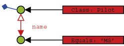

SODA Query API
The SODA query API is db4o's low level querying API, allowing direct access to nodes of query graphs. Since SODA uses strings to identify fields, it is neither perfectly typesafe nor compile-time checked and it also is quite verbose to write.
For most applications Native Queries will be the better querying interface.
However there can be applications where dynamic generation of queries is required, that's why SODA is explained here.
Simple Queries
Let's see how our familiar QBE queries are expressed with SODA. A new Query object is created through the #query() method of the ObjectContainer and we can add Constraint instances to it. To find all Pilot instances, we constrain the query with the Pilot class object.
01public static void retrieveAllPilots() { 02
ObjectContainer db=Db4o.openFile(YAPFILENAME); 03
try { 04
} 11
}


Basically, we are exchanging our 'real' prototype for a meta description of the objects we'd like to hunt down: a query graph made up of query nodes and constraints. A query node is a placeholder for a candidate object, a constraint decides whether to add or exclude candidates from the result.
Our first simple graph looks like this.

We're just asking any candidate object (here: any object in the database) to be of type Pilot to aggregate our result.
To retrieve a pilot by name, we have to further constrain the candidate pilots by descending to their name field and constraining this with the respective candidate String.
1
What does 'descend' mean here? Well, just as we did in our 'real' prototypes, we can attach constraints to child members of our candidates.

So a candidate needs to be of type Pilot and have a member named 'name'that is equal to the given String to be accepted for the result.
Note that the class constraint is not required: If we left it out, we would query for all objects that contain a 'name' member with the given value. In most cases this will not be the desired behavior, though.
Finding a pilot by exact points is analogous.We just have to cross the Java primitive/object divide.
1public static void retrievePilotByExactPoints( 2
Advanced Queries
There are occasions when we don't want to query for exact field values, but rather for value ranges, objects not containing given member values, etc. This functionality is provided by the Constraint API.
First, let's negate a query to find all pilots who are not Michael Schumacher:
1
Where there is negation, the other boolean operators can't be too far.
01
01
We can also constrain to a comparison with a given value.
1
The query API also allows to query for field default values.
01
It is also possible to have db4o sort the results.
01
All these techniques can be combined arbitrarily, of course. Please try it out.
There still may be cases left where the predefined query API constraints may not
be sufficient - don't worry, you can always let db4o run any arbitrary code that
you provide in an Evaluation. Evaluations will be discussed in a Evaluations chapter.